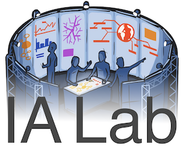

Adaptagrams is a library of tools and reusable code for adaptive diagramming applications, for example: drawing tools, automated document and diagram layout, smart presentation software, graph drawing, chart layout.
Currently, the Adaptagrams repository includes four cross-platform C++ libraries:
These libraries are collectively known as cola (for
Constraint Layout).
The Adaptagrams code is written and maintained by Tim Dwyer and Michael Wybrow, members of the Immersive Analytics Lab at Monash University. A number of papers describing the algorithms used in these libraries are listed on the documentation pages and our websites (here and here).
The libraries are documented with Doxygen. Documentation can be generated by running doxygen in the cola directory, or can be viewed online here:
You can find the C++ source code for
cola in the git repository on github:
https://github.com/mjwybrow/adaptagrams
All code in the Adaptagrams repository is released as open source under the terms of the LGPL.
We also dual-license the Adaptagrams libraries and for a fee we can provide them under a less-restrictive commercial license as well as extend them to fit your needs (contact us). For this reason, if you contribute code to the project and would like it to appear in the main Adaptagrams repository, we require that you assign the copyright on your changes to Monash Univeristy with the following statement: "I hereby assign copyright in this code to Monash University, to be licensed under the same terms as the rest of the code."
Software using the above libraries include: Inkscape, Graphviz, QxOrm library and QxEntityEditor, and Dunnart.
You must have an SVG capable browser to see the images on this page.
Below is an example showing a biological pathway laid-out using the algorithms in libcola:
Below: network of research collaboration amongst members of the Centre for Research on Intelligent Systems at Monash University: